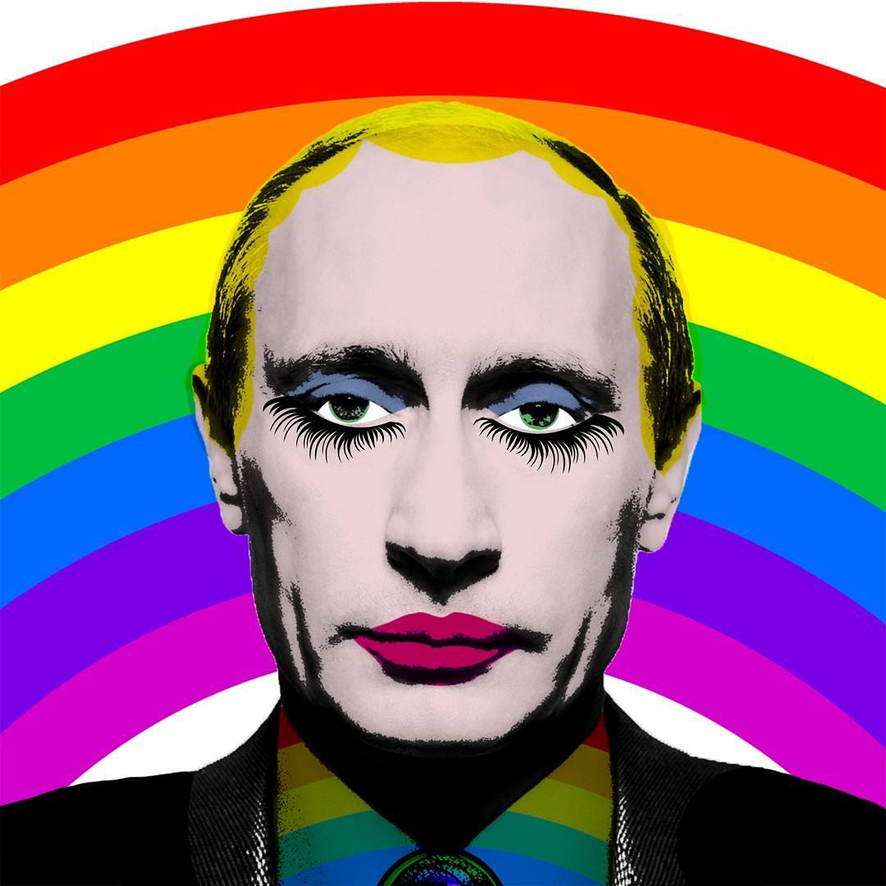

1. Jim Lindberg, 1999. Greed, Straight Ahead. Pennywise, Epitaph Records
Society, We all know there's something wrong and we know it all along. Sincerity, You may think there's no one else till they put you on a shelf. Society, Pay your taxes stand in line help them plan for your demise. Society, Crush the weak to get your share cause nobody's playing fair.1
Those were the words that I was shouting along with my fist, high up the air, amongst hundreds of other people during a Pennywise (Californian punk-rock band) show in 2014. Punk-rock was introduced to me as a tool to release pent-up energy and it gave me an enormous adrenaline rush in return. One could say, that it gave me the urge to do something but I was not sure what it was exactly. Back then I was easily influenced by the fast songs and explosive guitar and bass riffs, although I never actually listened to the expressive lyrics. The moment I started paying attention to what was being said in those songs, was also the moment that I realised punk-rock was not just about playing fast three-chord songs. It is a collective which strives for justice and equality. A collective consisting of people who play in bands, people who make artworks for the band, people who set up their own record studios recording the songs of bands, people who work at independent record labels and support the beliefs of bands, people who set up their own venues to provide a space for bands to connect with their audience. Those people together shape the DIY (Do It Yourself) core of the punk-rock movement which started in the late 1960s.
The thought of being part of something bigger than an individual alone can be, made me feel strong and empowered during the concert in 2014. I was part of a group consisting of people who are all different on one hand but on the other hand they all have something in common: the reason to believe that political agendas and fascist societies can be changed. Changed by groups of people who are tired of being pushed around by others. Tired of other people telling them what to do, how they should do it, or even worse: telling them what they can not do. And how do they convey the wish for change to others? They rise up, they gather and together they form a bigger whole: a movement is born. This is also the reason why I see punk-rock not only as a music genre. I see punk-rock as a movement.
Nowadays, with many political events that include injustice and fascism happening all around the world, the number of movements (or members of already existing movements) is growing fast. Where are we standing as educated, politically motivated designers in this matter, and how do we react on it? The aesthetics and agendas of the 1970s and 1980s punk-rock movement were striking and provocative, not only nationwide but globally. Still nowadays the visual communication of the punk-rock movement is considered to be striking. Around me I noticed that a lot of techniques and tactics, which were used to distribute the anti-fascist ideologies, are being used in contemporary graphic design practices. What specific tactics and methods made the face of punk-rock so provocative? Are those tactics and methods still relevant in contemporary provocative and activist design projects?
Although the revolutionary and provocative aspect of contemporary design projects appears to be a development of the 21st century, its methods and techniques are actually an aftermath of the ‘70s and ‘80s punk-rock movement. With projects all around the world that strive for a good cause and equal rights, designers use methods that are circulating for years. The ever growing popularity of the internet, make those methods easily shared and developed for further provocation. Which is needed, because one can see the western society moving towards the radical right wing. Therefore, I believe a constant reflection is a necessity for society to keep itself critical and smart. This reflection can be provided by many people. However, artists and designers have the ability to show new perspectives in visual ways, that would occur to be shocking, striking and therefore, mind changing.
What is a movement?
2. Derek Sivers, 2010. How to Start a Movement, TED Talks. h t t p s : / / w w w . t e d . c o m / t a l k s / d e r e k _ s i v e r s _ h o w _ t o _ s t a r t _ a _ m o v e m e n t ?
3. Alma Escamilla-Anguiano, 2016. Sociology 1301 Final Exam Flash Cards. h t t p s : / / q u i z l e t . c o m / 1 2 4 1 1 4 7 7 / s o c i o l o g y - 1 3 0 1 - f i n a l - e x a m - f l a s h - c a r d s /
4. Cyrus Ernesto Zirakzadeh, 2011. Social and Political Movements. Sage Publications Ltd
A movement can be subdivided into three categories, which are Political, Social and Artistic. According to, writer, entrepreneur and avid student of life Derek Sivers, a movement starts with a leader who is standing up and addresses an issue that is important for others to be aware of. Attention is raised when the first follower shows up and joins the leader. This has to happen in a public space and should be seen by everyone, because it is essential and necessary for movements to be visible. Indicating the simplicity of joining will help future followers to push themselves over the edge to join the group and so: a movement is born.2 When two or more people who interact with each other, have a common belief and collectively stand united, one can consider this to be a so called social group.3 When this group works together and strives to obtain a political goal, one can call this a political movement. According to Cyrus Ernesto Zirakzadeh, the difference between a social and a political movement is that social movements refers to purposeful undertakings by people who do not hold positions of authority or wealth, but who wish to redirect their society towards new goals and values by bypassing or defying those in power.4 Political movements have the exact same actions, but the goals they strive for, require legislation to actually make the change happen.
Political Movement
5. Swann Jr, William B. 2015. Identity Fusion. Current Directions in Psychological Science. h t t p : / / j o u r n a l s . s a g e p u b . c o m / d o i / 1 0 . 1 1 7 7 / 0 9 6 3 7 2 1 4 1 4 5 5 1 3 6 3
6. Charles Tilly, 2004. Social movements, 1768-2004. Paradigm Publishers
7. James T. Patterson, 1996. Grand Expectations: The United States 1945–1974. Oxford University Press
8. History.com Staff, 2009. Civil Rights Movement. A+E Networks. h t t p : / / w w w . h i s t o r y . c o m / t o p i c s / b l a c k - h i s t o r y / c i v i l - r i g h t s - m o v e m e n t
9. Ryan Struyk, CNN, 2017. Blacks and whites see racism in the United States very, very differently. h t t p : / / e d i t i o n . c n n . c o m / 2 0 1 7 / 0 8 / 1 6 / p o l i t i c s / b l a c k s - w h i t e - r a c i s m - u n i t e d - s t a t e s - p o l l s / i n d e x . h t m l
For a movement to achieve its goal, or to state its opinion, a well coordinated group action takes place. Most of the time, this group action happens in a situation, where people from divers collectives take action at the same time. To achieve their goal, acting together is a necessity. Group action is more likely to occur when the individuals within the group feel a sense of unity with the group, even in personally costly actions.5 This kind of movement is called a social movement. A sociologist called Charles Tilly deconstructs social movements into three parts: contentious performances, displays and campaigns where the followers of the movement make collective claims on others.6
One of the most famous examples of a non-violent intended social movement, which transformed into a political movement, was the African-American Civil Rights Movement in 1968, coordinated and executed by Dr. Martin Luther King Jr. This Civil Rights Movement put civil rights at the top of the agenda of reformers in the United States.7
Civil rights protesters meet the National Guard at the home of the Memphis Blues, 1968, Unknown photographer
The Civil Rights Movement of 1968 consisted of multiple groups and movements who all strived for a common goal, which was to end racial segregation and discrimination. For many years, Afro-American citizens were treated unequally and although they had been fighting for equal rights for decades, it was only in the 1950s when the bubble bursted and they were granted some attention. The call to rise up was quickly spread through churches and brotherhoods, that had a lot of power within the movement in that time. They convinced their members and followers that it was time for everyone to express their dissatisfaction. This resulted in non-violent intended protests which included boycotting public places and public transport. The later on called leader of the movement was Martin Luther King, Jr. He was the one who dared to take the first step to show his followers that if he could stand up and protest in an effective nonviolent way, everyone could. For approximately thirteen years, the movement was organizing actions throughout the whole country, to finally achieve its goal: a change in the American agenda.8
Social Movement
After the second World War, nuclear and atomic arms became increasingly popular amongst state armies around the world. The fear of a nuclear war became acute in the late 1950s. Big protests were held globally to abolish nuclear weapons. Especially in the US and the UK.
In 1957, the Campaign for Nuclear Disarmament (CND) was formed in the UK. The CND is an organization that is committed to protests against atomic testing, weapons and nuclear power stations as the result of a military action. The CND, together with other organizations, formed the social peace movement in the UK. The movement became famous for its Aldermaston March. It was a march from London to Aldermaston, the Atomic Weapons Research Establishment. Between 60.000 and 100.000 civilians participated, accompanied by banners, signs, and symbols to convey their message.9
9. Campaign for Nuclear Disarmament, 2010. The History of CND. http://www.cnduk.org/about/history
It was around that time when the peace symbol earned its international title as the symbol for peace. The symbol was designed by Gerald Holtom, to serve as a logo for the CND. The symbol is a combination of the semaphore signals for the letters ‘N’ and ‘D’ closed by a circle. The letters ‘N’ and ‘D’ stand for Nuclear Disarmament and the circle stand for the unity of the organization. Later on, the symbol was adopted by global anti-war movements.10 In the course of time the symbol gained its political peace burden and it is still used and acknowledged by protests around the world.
10. Ransom Riggs, 2008. Where did the peace sign come from? Mental Floss. http://mentalfloss.com/article/19044/where-did-peace-symbol-come
The CND achieved many goals over the years. The most important one was to create social awareness on how destructive and immoral atomic arms are. It has created a standard in which nuclear testing and atomic weapons are not tolerated. The majority of the UK is now against nuclear power, thanks to the active demonstrations organized by the CND. I believe that this is the goal every social movement is striving for: to create social awareness that leads to new ethics, picked up by the majority of a society.
Art Movement
Movements are not only found in political or social fields. A scene where movements also commonly occur is the art scene. Most well known art movements arose during the 19th and 20th century, for instance Dadaism (1916–1922) and Situationism (1957–1972).
11. Redactie Ensie, 2015. Dadaisme. h t t p s : / / w w w . e n s i e . n l / r e d a c t i e - e n s i e / d a d a i s m e
During the first world war a small cultural movement arose in neutral Switzerland which is known as Dadaism. The movement was a collective of artists, writers, performers, and designers who aimed to radically return to their childlike creativity. Dadaism stood for everything that goes against the grain of socially accepted standards.11 A lot of childish humour was also a prominent aspect within dadaism, which is clearly visible in the work of Marcel Duchamp from 1919 called L.H.O.O.Q. It shows us a reproduction of Leonardo Da Vinci’s Mona-Lisa with a moustache and goatee.
The name L.H.O.O.Q. is a pun where the letters, if pronounced in French, sound like Elle a chaud au cul (She is hot in the arse) which is an expression implying that a woman has sexual restlessness. This is one example of Dadaism at its finest. It is seen as a not-exactly-reality. Artists were using already existing artworks which they then tweaked and therefore mocked.
The absolute artistic freedom combined with irrationalism can be found back in surrealism. To attack the hypocritical values of the “civilized” world back then, the dada artists used various mediums for their artworks, although collages and assemblages were an often used medium for the artists. Beside physical works, dada artists created and performed nonsense poems that were mainly focussed on tones. Their main goal was to mock the traditional art forms, which they saw as the aftermath of the failed trench war, better known as the first world war.
12. Tate, London, 2017. Avant-Garde. h t t p : / / w w w . t a t e . o r g . u k / a r t / a r t - t e r m s / a / a v a n t - g a r d e
13. Matei Calinescu, 1987. The Five Faces of Modernity: Modernism, Avant-Garde, Decadence, Kitsch, Postmodernism, p.140. Durham: Duke University Press
14. G.J. van Bork, D. Delabastita, H. van Gorp, P.J. Verkruijsse en G.J. Vis, 2012–2016. Avant-Garde. h t t p : / / w w w . d b n l . o r g / t e k s t / d e l a 0 1 2 a l g e 0 1 _ 0 1 / d e l a 0 1 2 a l g e 0 1 _ 0 1 _ 0 0 7 4 2 . p h p
Most of the time, an art movement was formed by artists who believed in a specific common ideology and reflected that in their artworks. Like Dadaism, every movement that would follow up Modernism was considered to be a new kind of avant-garde.12 The meaning of the word avant-garde comes the Renaissance era, when it was used as military term for the forefront of an army. After the Renaissance, the word was reused as a metaphor for everything revolutionary and had future oriented goals. Late 19th century, the term avant-garde received its significance, which is still carried on this day within the art scene. In other words: revolutionary art. Most of the time, the avant-garde was in favour of radical social reforms. This was evoked in an essay L’artiste, le savant et l’industriel (The artist, the scientist and the industrialist), 1825, by Saint Simonian Olinde Rodrigues. In that specific essay, the first use of the term avant-garde was used by Rodrigues to persuade artists to serve as soldiers of the avant-garde and Rodrigues insisted that the power of the arts is indeed the most immediate and fastest way to social, political and economic reform.13 In general, artists who take part in an avant-garde movement are usually rebelling against current hypocritical social standards. Most of them experiment with new mediums, techniques, and styles. By doing so, the avant-garde artists expose radical ways to break the current existing art form. They do so by ridiculing the art form or to show the public a different and unusual perspective on the art form. Nowadays the term avant-garde is used to define some groups that consist of artists who see themselves as the innovators of new art. This started in the art forms Dadaism, Futurism, Constructivism and Surrealism from before the second World War.14
In 1957, a new kind of artistic movement was formed in Italy: The Situationists. This movement was most active during the student protests of 1968 in Paris.
15. Amy Britton, 2012. Situationism explained! and its affect on punk and pop culture. h t t p : / / l o u d e r t h a n w a r . c o m / s i t u a t i o n i s m - e x p l a i n e d - a f f e c t - p u n k - p o p - c u l t u r e /
This artistic and political movement was highly influenced by Dadaism. Their most famous leader was Guy Debord with his work La Société du Spectacle. It says, simply put, that the world we see is not the realistic world, but the world we are conditioned to see. Therefore, we have to explain to the ones who can not see it, what the real world is like, so everyone can wake up. That was the agenda of the situationists.15 That is also why I believe Situationism was the instigator of the punk-rock movement.
The Punk-Rock Movement
When most people hear the term punk-rock, probably the first things that will cross their minds will be mohawks, loud and aggressive music, leather jackets, safety pins, and pin buttons. Beside those punk-rock leftovers (as most people assume that punk is dead), it was more than just an aesthetic. There was an ideology to change the social agenda and get rid of fascism in general, by using different kinds of mediums. It might seem to most people that the punk-rock movement was a political movement because of its political statements, although I believe that it was a social movement. They strived for social change by changing the mindset of the people. Because the punk-rock movement believed in a non-state controlled society, the movement had close ties to anarchism. It was all about rejecting the socially accepted ways of living, which comes down to society deciding how one should live, behave and sacrifice for society’s sake.
Symbolism in Punk-Rock: Red & Black Flag
Such as anarchism, the flags are a signature and a product of the social struggle against capitalism, statism, fascism, and state-control. It represents the anti-state since the color black stands in contrast to most of the colorful nation state flags around the world. When talking about visual characteristics of the punk-rock movement and its close ties to anarchism, colors play an important role. The two constantly present colors are red and black. Nowadays the black flag represents anarchism. Yet the original flag and symbol was a solid red flag and was introduced during the Paris Commune in 1871.
The Paris Commune was a socialist and revolutionary government, which ruled for one month and was highly influenced by the ideas of Karl Marx. An anarchist by the name of Communard Louise Michel explains the concept of the red flag as follows: Lyon, Marseille, Narbonne, all had their own Communes, and like ours, in Paris, theirs too were drowned in the blood of revolutionaries. That is why our flags are red. Why are our red banners so terribly frightening to those persons who have caused them to be stained that colour? 16
Not only the red flag, but also the black flag was introduced by revolutionary anarchists around the 1880s. The concept of symbolism in anarchism mirrored the genesis and ideologies of the anarchist class struggle movement. Aside from explaining where the red flag finds it origins, Louise Michel popularised the black flag as a symbol of anarchy. The black flag then travelled from Europe to America where it spread, as it was raised as a symbol for the International Working People’s Association in their fight against capitalism.17 After the usage in America, the black flag was picked up by other revolutionary class struggle anarchist, but this time it was raised globally. Just like the black flag, the half red, half black flag was also introduced in Europe. It made its first appearance in Italy in 1876. The half red, half black flag was raised by the Italian section of the First International and they were additionally the first to move from collectivism to communist-anarchism.18 Consequently the red and the black flag were internationally acknowledged as the characteristics of anarchism.
16. Louise Michel, 1981. The Red Virgin: Memoirs of Louise Michel, p.65. University of Alabama Press
17. Iain McKay, 2008. An Anarchist FAQ, p.3171. The Anarchist Library
18. Nunzio Pernicone, 1993. Italian Anarchism 1864-1892, p.111. Princeton University Press
Symbolism in Punk-Rock: Circled A
Worldwide, the circled A is the most used symbol to represent anarchism. In accordance to Peter Marshall’s book Demanding the Impossible, the circled A stands for Pierre-Joseph Proudhon’s principle Anarchy is Order. The circled A is a monogram that consists of the first characters from the words Anarchy and Order.19 In addition to Proudhon’s principle, Peter Peterson says that the circled A symbolises unity and determination which lends support to the off-proclaimed idea of international anarchist solidarity. 20 Most people believe that the symbol was introduced for the first time during the 1970s punk-rock movement, although it had its first appearance in a much earlier period. It was adapted by the punk-rock movement when the band Crass encountered the circled A in France. Back then the symbol was not more than an obscure image. Nevertheless it was an utter striking design that dated back to at least the Spanish Civil War of 1936. Crass added the symbol to their repertoire. The band was taking a stand by putting the circled A next to a peace symbol during their performances. It was their way to tell their audience that anarchism can and should be a non-violent matter. Therefore the band separates itself from the people who commit an act of violence “in the name of anarchy”.21
19. Peter Marshall, 1992. Demanding the Impossible: A History of Anarchism, p.558. PM Press
20. Peter Peterson, 1987. Flag, Torch, and Fist: The Symbols of Anarchism, p.8. Freedom
21. Steve Appleford, 2005. The Only Way to Be – Anarchy!. h t t p s : / / w e b . a r c h i v e . o r g / w e b / 2 0 0 5 1 2 2 4 2 0 5 9 1 4 / h t t p : / / w w w . l a c i t y b e a t . c o m / a r t i c l e . p h p ? i d = 2 6 9 6 & I s s u e N u m = 1 2 2
^ Jello Biafra, 2013. The Art of Punk - Dead Kennedys. MOCAtv.
The techniques/usage of DIY
22. Jello Biafra, 2013. The Art of Punk - Dead Kennedys. MOCAtv. h t t p s : / / w w w . y o u t u b e . c o m / w a t c h ? v = C i M L Q q N F T y I
23. John Marchant. Profile section. h t t p : / / w w w . j a m i e r e i d . o r g / a b o u t /
24. SexPistolsChannel, 2010. Why God Save the Queen was banned. h t t p s : / / w w w . y o u t u b e . c o m / w a t c h ? v = E o X H g B h W b y w
Sex Pistols – God Save The Queen, Jamie Reid, 1977
God Save The Queen, Jamie Reid, 1977
From the very beginning, punk’s visual art was deliberately simple, DIY, basically anyone could make it. All it took was scissors or a razor blade and some glue and then you could make collages.22
One of the founders who gave a face to the punk-rock scene in the late ‘70s was Jamie Reid. The English artist is known for his distinctive usage of strategies and techniques that originate from Situationism. The technique that was applied comes down to destruct, mix and reassemble. This method can be found back in the iconic artworks for the Sex Pistols and Suburban Press. His artworks in general have the tendency to show us in which alternative ways we can use our energy and spirituality. In his work, Reid reacts on contemporary civil issues that attack the liberty of civilians. By filling up common spaces with passionate anger and humour, he makes the public reconsider their political point of view and we might want to deconstruct and reassemble our standards.23
The Suburban Press was for Reid a platform where he, amongst others, could send his politically engaged work into the world, open for others to see. Suburban Press was keen on releasing provocative posters and magazines. It found its characteristics in photos being ripped out of magazines, pasted on top of another photo and the typography consists of cut up headings from newspapers. The new images and cut up typography would be put together as a collage and afterwards small adjustments would be made with the help of a simple marker or pen. The reason why collages were used in that time and especially the reason why they were so striking, is because the taken images from several sources were put in a surreal context. This shocks the minds of the people, since we are used to see things in the context provided by the news or magazines.
The Suburban Press was for Reid a platform where he, amongst others, could send his politically engaged work into the world, open for others to see. Suburban Press was keen on releasing provocative posters and magazines. It found its characteristics in photos being ripped out of magazines, pasted on top of another photo and the typography consists of cut up headings from newspapers. The new images and cut up typography would be put together as a collage and afterwards small adjustments would be made with the help of a simple marker or pen. The reason why collages were used in that time and especially the reason why they were so striking, is because the taken images from several sources were put in a surreal context. This shocks the minds of the people, since we are used to see things in the context provided by the news or magazines.
Probably the most iconic work that Reid made was the God Save The Queen artwork which was used for The Sex Pistols single God Save The Queen. The original artwork that Reid proposed was not the image of the queen with text covering her eyes and her mouth. The original artwork was an image of the queen with a safety pin through her mouth and little swastika’s as eyes. This image was surrounded by the text she ain’t no human being, which was for that time extremely unheard and provocative. The image became very popular under the British citizens. The image even reached the queen herself. In a small documentary about the ban of God Save The Queen, royal commentator James Whitaker explains that it was not the queen who felt passively attacked by the image, but the sovereign being desecrated in this manner. Therefore, the single and the artwork were banned from the United Kingdom.24
The face of punk rock had also been shaped by American artist Winston Smith. He used the art of collage since the 1970s and is still very active in the field of punk-rock. During the 70’s, Smith went abroad to study in Rome for a few years. When Smith returned to the United States, he was mesmerized by the American citizens' egocentrism towards the capitalist and multinational domination that was rising up in the American society. By seeing this transformation happening, Smith decided to create handmade collages, which would call on society to reflect on itself. These collages consisted of images from daily life magazines which were cut out and placed in a new surrounding. By doing so, confronting situations were highlighted and therefore, a politically engaged artwork was created. The new contextualised image would confront the viewer with contemporary political paradoxes of modern society.25
25. Winston Smith, 2012. About Section.h t t p s : / / w i n s t o n s m i t h . c o m / a b o u t /
It was not until the early ‘80s when Smith’s work became famous among other artists. Mainly for his collaboration with the punk-rock band Dead Kennedys, for which he made album covers, posters, flyers and at long last the famous logo for the Dead Kennedys.
Nowadays the DK logo remains one of the symbols that internationally stands for protest against authoritarianism. People also still see the symbol as a reminder to stand up when told to sit down and one should not go down without a fight. It was not because of its sharp and aggressive appearance that the symbol became so iconic and determinative. It was because of its simplicity. Jello Biafra, lead singer of the Dead Kennedys, asked Smith to make a symbol for the band which had the initials of the band in it. The symbol had to be so simple, it could easily be graffitied.26 When the logo spread through the country, the music with its addressed issues and agendas would follow. The logo, together with the punk-rock movement, lasted for so long because in some cases hate, anger, and aggression, when used properly and wisely, have more power to injure and provoke than peace and love do.
26. Jello Biafra, 2013. The Art of Punk - Dead Kennedys. MOCAtv h t t p s : / / w w w . y o u t u b e . c o m / w a t c h ? v = C i M L Q q N F T y I
In 1981 the Dead Kennedys released their album In God We Trust, Inc. and almost immediately after the release, the album got banned in England and condemned by the American religious right. Therefore the Dead Kennedys and Winston Smith claimed their permanent spot within the punk-rock scene.27
27. Winston Smith, 2012. Punk Art Surrealist Winston Smith.h t t p s : / / w i n s t o n s m i t h . c o m / w p - c o n t e n t / u p l o a d s / 2 0 1 2 / 0 2 / W i n s t o n - 2 0 1 2 . p d f
The white flag represents surrender, and on the contrary the black flag symbolizes defiance and opposition to surrender. This information comes from someone who was not only talking from an anarchist point of view, but also talking about a band that carries the most famous logo in the history of punk-rock: Black Flag.
The reasons behind the provocative aesthetics of punk-rock
Black Flag Logo, Raymond Pettibon Ginn, 1977
The band Black Flag was formed in 1976 in Southern-California, by Greg Ginn. The band was considered to be one of the first hardcore-punk bands in the United States. Initially, the band was called Panic, but Greg’s brother Raymond Ginn, also known as Raymond Pettibon, stepped in and presented the logo and then the name: Black Flag.28 An image and name that stood for anarchism and rebellion. The band carried an anti-authoritarian and anti-state controlled message, which they expressed in their songs. Themes such as social agitation, exploitation and paranoia were often the issues the band addressed in their music. As the band gained popularity, the logo’s connotation expanded and the bars became more than just a logo. It became a symbol that stood for rebellion and anti-state control. The logo was written, graffitied, stencilled, tattooed, and carved on everything and everywhere. The heavy load that the logo carried was not only familiar among citizens, but also among the authorities, such as chiefs of the police. Soon after, the presence of police officers at Black Flag shows increased.
28. Henry Rollins, 2013. The Art of Punk - Black Flag. MOCAtv. h t t p s : / / w w w . y o u t u b e . c o m / w a t c h ? v = N 0 u 0 4 E q N V j o
29. Henry Rollins, 2013. The Art of Punk - Black Flag. MOCAtv. h t t p s : / / w w w . y o u t u b e . c o m / w a t c h ? v = N 0 u 0 4 E q N V j o
30. Winston Smith, 2013. The Art of Punk - Dead Kennedys. MOCAtv. h t t p s : / / w w w . y o u t u b e . c o m / w a t c h ? v = C i M L Q q N F T y I
Pettibon’s contribution to the band was one of great value. Aside from designing the band’s logo, Pettibon made all the artwork for the band and the dark-humored images were often so striking that they couldn’t be ignored by anyone. In my opinion, the images are so provocative because of the direct and honest reflection of society, mixed with humor. It was the direct recognizability that attracted the attention at first in my belief. Recognizability as in people seeing themself, or their personality. Secondly, people see themselves doing something overly exaggerated, something they normally only think of but never say or do, because they are afraid of society’s judgement. The overly exaggerated characters are the signature of Pettibon’s work. He knows exactly how to trigger people's attention and by doing so, he was provoking a reaction. For instance, there was a period where Pettibon used the face of the murderer Charles Manson and put it on the body of Jesus. A series of images followed and in the end it was used multiple times on flyers to promote upcoming Black Flag shows.29 If that was not already offensive enough, the band used those flyers to promote their shows in California where Charles Manson’s murders took place. Pettibon was deliberately offending people as a tactic to provoke reactions and to disturb the peace.
Black Flag at the Starwood, Raymond Pettibon Ginn, 1980
When the punk-rock movement started to gather momentum around 1977, artists, designers, musicians and their audience considered the punk-rock movement as an art movement instead of just a music genre. One can see a lot of comparisons with Dadaism. Imagery was cut out of magazines or newspapers and put together. It would create a new image with new context. Winston Smith explains it quite well in an interview: Imagine that there is a guy standing on a train hovering over the Niagara Falls. I didn’t know they can build trains over the Niagara Falls, oh wait they can’t, but if you use a razor blade and glue you can and then you can suddenly change the whole world.30
Bands such as Crass, Dead Kennedys, and Black Flag gained a lot of publicity with their extravagant shows throughout the UK and US. The period between the late 1960s until the mid 1980s was a period of economic stagnation in the Western world. This was an aftermath of the post-World War II economic expansion. It led to high unemployment for the working class youth and they blamed it on the government. Punk-rock was offering a place for those who had to release their passionate hate and anger. It was a place where the frustration was turned into songs and/or artworks, instead of letting it out on other people. This is the reason punk-rock developed its explosive aesthetics and anti-fascist ideologies. It was the artists and the designers from that time who could capture those ideologies and were able to distribute those thoughts. The bands were the ones who carried the message of social change from one place to another, but it was the artistic approach portrayed on record sleeves, logos, and other artworks that kept the ideology alive. The people who were present at the shows were the ones that turned the punk-rock scene into a punk-rock movement. To reflect back on the How to start a movement video, it was the band that showed up with a message. Strengthened by their visual language, provided by artists and designers. Nevertheless, it was the fans and the supporters who distributed the message by buying the records, wearing the logos and slogans of band on their T-shirts or jackets, and displaying other visual resources to other people. If it was not for them, punk-rock would have just stayed a music genre.
To explosively scream for change in musical and visual ways, was punk-rock’s tactic to address society. They tried to break the status quo, by holding up a mirror for society to reflect on. Punk-rock strived for social change, equality and acceptance. That is also why I consider the punk-rock movement to be a social and artistic movement.
Contemporary Activist and Provocative Design Projects
That we nowadays immediately recognize the distinctive punk aesthetics when one points it out, tells us that the visual part of a movement is of importance for its recognisability. Visual recognisability always works to draw the attention of an audience that a movement seeks to address. As mentioned before, most people assume that punk is dead, but its ideology is still very much alive. Punk aesthetics are infused into different kind of mediums. The techniques and provocative aspects are still being used by contemporary designers and artists.
In the book Punk: An Aesthetic, Johan Kugelberg explained how the aesthetics of punk-rock are still being used nowadays, yet unfortunately most of it is taken out of its context, and it has lost its political burden over time. Kugelberg wrote that unlike the hippie counterpart, the aesthetic of the punk movement has not really become the sole discretion of nostalgia hounds, history rewriters or reenactors. More common is to see the trickle-down of a punk graphic style infusing anything from the work of contemporary street art satirists like Kozik, Banksy or Zevs to corporate advertising for Nike or John Varvatos—or, for that matter, the superbly amusing Johnny Rotten commercials for Country Life Butter. We also see the punk Do-It-Yourself (DIY) ethos impregnate blogs, literary salons, the curatorial slant of major cultural institutions, and, less fortunately perhaps, mall shops and youth-targeted branding. We hear the rudimentaries of the punk sound of 1977 infuse any number of Disney Channel bands, and the recent antiquarian frenzy surrounding mimeographed poetry publications and rock-and-roll fanzines originates here too.31
IMG Left: Album Cover Filler – Minor Threat, 1981. IMG Right: Poster Nike SB Major Threat Tour, 2015
Punk-rock’s political burden faded as more people adapted the looks and feels from the movement. It died almost completely when the majority of society named and used the rebelliousness of the movement, as a fashion item. Even now it is still prominent as fashion. For instance, two or three years ago, it was a trend to wear shirts with the Black Flag logo or the Ramones logo on it, but not for its political point of view or to show others that you support a certain ideology. Or people are wearing jackets with patches on them. Not because they have ripped holes in their clothes as the result of not having any money to buy new clothes, but for the sake of fashion. This is what is left of the punk-rock movement nowadays.
Fellow Americans, Pablo El Terrible, 2017
Putin A La Warhol, Pablo El Terrible, 2013
32. Elena Cresci, 2017. Russia bans picture of Vladimir Putin in drag. The Guardian. h t t p s : / / w w w . t h e g u a r d i a n . c o m / w o r l d / 2 0 1 7 / a p r / 0 6 / r u s s i a - b a n s - p i c t u r e - o f - v l a d i m i r - p u t i n - i n - d r a g
33. Milton Glaser, Mirko Ilic, Civilization & Dennis Elbers, 2017. The Design of Dissent, p.37. Graphic Matters.
34. Yuri Veerman, 2012. Putin a Rainbow. h t t p : / / y u r i v e e r m a n . n l / P u t i n - a - r a i n b o w
Strike-A-Pose, Roosje Klap, 2017
35. Ingelise de Vries, 2017. De Stembus 2017: Make voting great again! Metro Nieuws. h t t p s : / / w w w . m e t r o n i e u w s . n l / n i e u w s / b i n n e n l a n d / 2 0 1 7 / 0 1 / d e - s t e m b u s - 2 0 1 7 - s t e m m e n - i s - j e - d e m o c r a t i s c h e - p l i c h t
36. Simon Shuster, 2016. The U.K.'s Old Decided for the Young in the Brexit Vote. TIME. h t t p : / / t i m e . c o m / 4 3 8 1 8 7 8 / b r e x i t - g e n e r a t i o n - g a p - o l d e r - y o u n g e r - v o t e r s /
37. Omri Ben-Shahar, 2016. The Non-Voters Who Decided The Election: Trump Won Because Of Lower Democratic Turnout. Forbes. h t t p s : / / w w w . f o r b e s . c o m / s i t e s / o m r i b e n s h a h a r / 2 0 1 6 / 1 1 / 1 7 / t h e - n o n - v o t e r s - w h o - d e c i d e d - t h e - e l e c t i o n - t r u m p - w o n - b e c a u s e - o f - l o w e r - d e m o c r a t i c - t u r n o u t / # 3 e 4 b e 8 9 6 5 3 a b
Tactics and techniques of contemporary provocative design projects
Although most of punk-rock’s iconic styled objects are swallowed by consumerism, the tactics and techniques are still being used in contemporary activist and provocative design projects. The power of collage is still relevant and from time to time, assembled images are still banned in certain countries. For example, the adjusted photo of Vladimir Putin. His face covered in makeup and surrounded by a rainbow. It started in 2013, when Russia established a law that bans gay ‘propaganda’ nationwide. The image was frequently used during protests against the anti-gay laws and regime in Russia.32 The reason the image is banned, is because, according to authorities, it would imply the non-standard sexual orientation of the president of the Russian Federation. The penalty that comes along when the image is used, distributed, tweeted or shared, is fifteen days of jail time or a fine of €50,–.33 Originally the image was made by a person that goes by the pseudonym Pablo. Pablo uploaded the image on the website putinarainbow.com, which is an ongoing project established by the Dutch activist designer Yuri Veerman, and graphic designer Brigiet van den Berg. The project was part of a movement organised by the Dutch LGBT-rights organization COC. The website is an archive where images are collected of Putin merged with rainbows. In one week the archive was filled with over a hundred images, which were shared world wide. As Veerman says, which I agree with, the most important part of an online protest is that there are no borders when it comes to distribution. Within minutes one single image can be seen all around the world.34
This is a huge advantage for contemporary protests. Something that they did not have have during the punk-rock movement of the ‘70s and ‘80s. What is remarkable here, is the punk-rock technique of decontextualization. An image, in this particular case the head of Putin, is taken out of its natural context by placing it somewhere else or something is added to it, in this case a rainbow. This is a method which has often been applied to artworks during the punk-rock movement. The method works as follows:
Step 1. Take a recognisable person who represents oppression in any way.
Step 2. Add some sort of image or symbol which represents the oppressed.
Step 3. Distribute the image everywhere.
Result: One will have a striking and provocative image. That image will not only disturb the person that is being depicted, it will strike a whole audience. When a larger audience is reached, only then will it gather momentum and therefore, reflection of the bigger picture can be revealed to the public. Just as the God Save The Queen artwork did in the ‘70s.
The online archive was created as a tool for protesters, commissioned by COC Amsterdam. I do not consider the archive itself to be a movement on its own. It is merely a tool for movements and in this particular case, it is a tool for the LGBT-rights movement. It did however contribute to the development of a visual identity for the LGBT-rights protests in Russia.
As online activism is rising and developing, offline activism is still of great importance. Especially the D.I.Y. method is becoming popular again.The Strike-A-Pose project by Roosje Klap shows this very clearly. For around 850.000 youngsters, the Dutch elections in march 2017 were of great importance, as they were allowed to vote for the first time.35 I too believed it was necessary that everyone with the ability to vote, should vote. Otherwise the people of the Netherlands, would face the same demise as Great-Britain: Brexit. Youngsters did not vote and the elderly generation took over, thereby determining the future for their offspring.36 Or we would face the same demise as the United States: A man on top who is basically fascism and inequality in a human form. It was the aftermath of people who thought that their non-voting would not have any impact.37 And here in the Netherlands we have our own blond troublemaker who would disturb the peace on our behalf. Those three motives were enough for Klap to start a project that would encourage youngsters to vote, by creating a series of posters which were direct and purely typographic. She would place an adjusted lyric of the song Vogue by Madonna, whereby the word vogue was replaced by the word vote to create a new context. After the design was set, the posters were silkscreened, RISO-printed and letterpressed to soon afterwards be distributed and wild pasted by Klap herself.
After decorating the city streets, the campaign continued online on social media platforms Instagram and Facebook. Many people shared the images and posted photos of the posters on the streets. I believe that offline D.I.Y. techniques and social media go hand in hand together when it comes to activism and standing for something one beliefs in. When one voices their opinion on the streets nowadays, it will stand out way more than it used to be. In my opinion that is because when everything is done online, it won’t stand out anymore. And therefore when activism gets done offline, it will receive much more attention. In addition, people will post it online for you when they see it on the streets, one just needs to provide something striking to the people.
38. 4over4.com, 2013. Why Pin-Back Buttons Are a Huge Marketing Success. 4over4.com. h t t p s : / / w w w . 4 o v e r 4 . c o m / b l o g / 4 2 5 9 / w h y - p i n - b a c k - b u t t o n s - a r e - a - h u g e - m a r k e t i n g - s u c c e s s /
39. Elizabeth King, 2016. The Long Story Behind Presidential Campaign Buttons and Pins. TIME. h t t p : / / t i m e . c o m / 4 3 3 6 9 3 1 / c a m p a i g n - b u t t o n s - h i s t o r y /
40. Sagmeister & Walsh, 2016. Pins Won't Save The World. Sagmeister & Walsh. h t t p s : / / s a g m e i s t e r w a l s h . c o m / w o r k / a l l / p i n s - w o n t - s a v e - t h e - w o r l d /
41. Jenny Brewer, 2016. Trump protest pins by Sagmeister & Walsh, Hort, Olimpia Zagnoli and more. It’s Nice That. h t t p s : / / w w w . i t s n i c e t h a t . c o m / n e w s / t r u m p - p r o t e s t - p i n s - s a g m e i s t e r - w a l s h - 2 7 0 9 1 6
How is contemporary society being depicted nowadays?
When in 1789 the very first pin buttons were used, as a marketing tool to promote George Washington’s presidential campaign, it immediately determined its political value. The pin button evolved through time from being an advertising button to a button that was promoting a cause, especially during the ‘60s and ‘70s in the United States. A great number of anti-war and anti-fascist protests took place. Buttons were pressed with symbols on them, which would represent the cause people believed in.38 Nowadays people still wear pin buttons with the circled-A, the Dead Kennedys logo or the Black Flag logo on them, to show everyone where they stand for. Political buttons still pack a major punch in only a few inches of circular space today, and serve as a reflection of the political climate.39
Design celebrities Sagmeister & Walsh initiated the Pins Won’t Save The World project during the presidential elections of the United States in 2016. It is the most simple and direct way to express someone’s beliefs. With Trump being part of those elections, the LGBTQ movement, the Black Lives Matter movement and all other movements, initiatives, and collectives that strive for equality and social justice are at stake. As mentioned before in the first chapter, racial injustice and injustice in general are rising since the arrival of Trump. In addition, climate change gets denied by Trump’s appointed EPA leader, which could cause serious damage to our planet.40 Therefore, Sagmeister & Walsh created a series of pin buttons for everyone to show their politics and thoughts about Trump. The profit would be donated to several charities, including: Amnesty International, Planned Parenthood and the International Refugee Assistance Project. Sagmeister & Walsh stated that now more than ever, we have to resist Trump’s racism, misogyny, xenophobia and homophobia from becoming the new normal. We need to stand up for tolerance, equality and unity.41
Pins Won’t Save The World, Sagmeister & Walsh, 2016
By doing this project, Sagmeister & Walsh took the concept of the pin button, as the stylistic object and resurrected the political value it once carried. The pin button travelled a long road. From an authoritarian marketing object to a button that was promoting the cause, to a stylistic object and now back again as a tool of expression. The political value of the pin button is being restored. What I find engaging about this project is its approach to its audience. The pin button is a trending fashion item amongst the majority of consumers in Western society. By smoothly infusing a critical and political cargo into the object, the pin button will receive meaning again. Because it is a trending item to wear, people will pick it up in any way. Therefore, distribution of the item will happen by itself. On a similar note as the Putin-a-rainbow project, I also consider this project not as a movement on its own, but as a tool for protesters and movements.
42. Alicia Garza, 2017. A Herstory of the #BlackLivesMatter Movement. h t t p s : / / n e w s . n o r t h s e a t t l e . e d u / s i t e s / n e w s. n o r t h s e a t t l e . e d u / f i l e s / b l a c k l i v e s m a t t e r _ H e r s t o r y . p d f
43. Ruben Pater, 2016. The Politics of Design, p.76. BIS Publishers
Black Lives Matter, Google Search, 2017. Google
Global Warning Signs, 2017
44. Keith Smith, Stewart Dean Ebersole, 2013. Barred For Life, p.97. PM Press
45. Design Action Collective, 2017. About Section. h t t p s : / / d e s i g n a c t i o n . o r g / a b o u t /
46. Diana Budds, 2016. Black Lives Matter, The Brand. Co.Design. h t t p s : / / w w w . f a s t c o d e s i g n . c o m / 3 0 6 2 1 2 7 / b l a c k - l i v e s - m a t t e r - t h e - b r a n d
A reflection on society, from society, to society
With the rise of racism and fascism in the Western world, movements are formed everywhere. One specific contemporary movement looks a lot like the Civil Rights Movement of 1968: the Black Lives Matter Movement. The movement was, amongst others, established in 2013 by activist and editorial writer Alicia Garza. #BlackLivesMatter, is an online platform developed after the murder of Trayvon Martin. Designed to connect people who are interested in learning more about fighting against racism. To be more specific, Garza explains the Black Lives Matter movement as an intervention, which is driven by ideologies in a political sense. This intervention is highly needed because we still live in a world where black lives are being seen as a “the other”. Made as a minority intentionally by the society’s system. Everyone plays their part in society and to be treated equally should be the norm. Unfortunately it is not. Consequently unequally treated people rise up and show their power in the face of those who are against them. The movement was strengthened by cultural workers, artists and designers who wanted to lift the movement to a higher state of just a social media platform. It was those people who wanted to bring the movement to the streets. Garza, together with Opal and Patrisse, created the main infrastructure for this movement. In no time they developed a big team that was led and designed by Patrisse Cullors and Darnell L. Moore. They hosted conferences on a national scale where they focused on black people, that are working extremely hard to simply just be accepted in society. Because of those conferences, a huge network was created across the country. The movement created a place nationwide where people could celebrate their acceptance and equality.42
Besides the ideologies of the movement, Alicia Garza from the Black Lives Matter also mentioned that artists and designers played an important role in this movement. As I look at the images of the Black Lives Matter protests, I notice that there is unity. Not only unity in a social sense, but unity in the design of the tools which are equipped by the protesters. It is not a corporate identity which was created for the movement. The designers simply gave some dynamic guidelines to keep the structure of unity present in my belief. The colors black and yellow are utter dominant alongside the full capital characters typography which is displayed on banners, protest signs, shirts, scarves and even on the official website of the movement.
Most signs and banners of the movement are made with a black background and yellow or white typography on top of it. The usage of full capital characters stands in an unofficial way for a call for attention as if one would be screaming. Within the spectrum of colors, the color yellow is the most luminous of them all. In the whole world the color yellow stands for caution as it is being used for instance on danger signs, nevertheless the color yellow also stands for enlightenment.43
The meaning of the color black differs per culture on how it is seen, as in most Western countries the color black stands for death. Depending in what context the color is used the meaning changes, and in the case of a protest, I see the color black, especially used on banners or flags, as the opposite of a white flag. As a white flag stands for surrender and holding back, the black flag stands for the opposite, no surrender, defiance and anarchism.44 All this is already sending an indirect message without any context, and by adding context provocative layers are created and gives the movement stability and a face. The design for the Black Lives Matter movement is created by a group called Design Action Collective and they only provide graphic design and visual communications for progressive, non-profit, and social change organizations.45 They are the brain behind the graphics of the movement. Within three days the Design Action Collective created a wordmark as logo, using the font Anton, which is similar to the font Impact, although Anton is an open source font. In an online article they describe the logo as bold, strong, militant, and carries strength and tone. Being easily replicable was the main goal since we know within movements people don’t have budgets to do professional printers–they’re hand painting logos, and the level of skill to replicate a logo by hand varies. We wanted to make something that people could pick up and use in myriad ways.46 This project shows that a DIY (Do It Yourself) technique and method can be used to bring unity within the identity of a movement when organized properly.
I believe in the strength of unity when it comes down to protests and movements. Unity within a group is important. Just as important as unity in the visual language. One needs to be reminded that the key, for a striking visual language, is simplicity and dynamic guidelines. If colors and typography already send a strong indirect message, one only needs to provide context by voicing one's honest opinion. All of the previously mentioned projects show that one should be critical towards society and therefore also critical to oneself. This is why it is important to have people around us who remind us of that. It doesn’t matter if it is in the form of an artwork, column or any other medium. People seem to forget about self reflection. We as human beings have the natural tendency to be more attracted to imagery than to theoretical subjects. We even think visually instead of theoretically. Therefore, I believe in the importance of a provocative artwork as a mirror for society.
A lot of comparisons can be found between the Black Lives Matter movement and the punk-rock movement. The reasons why they were created may differ, nevertheless the explosive way of taking a stand is present in both movements. Not only the tactics can be compared. Also the way how they developed a visual identity with the help of artists and designers is noticeable. As Jello Biafra from the Dead Kennedys said, a symbol or logo needs to be so simple it could easily be graffitied. The exact same concept was used by the designers during the creation of the BLM logo. It were both the supporters and the members of the movement who carried the logo and thereby the message of the movement was everywhere. That is why the Black Lives Matter initiative could grow to the global movement it is right now.
Anarchism, Agendas & Pin Buttons
Conclusion
We live in a time of social unrest, where people are being oppressed by authorities. Inequality is still occuring with the rise of right wing politics and multinationals are gaining more governmental power. The number of movements around the world is therefore also growing. Several smaller communities are joining forces to create a bigger collective which strives for justice and equality. The time is now to stand up and let society reflect on itself, to prevent more casualties as the result of governments not listening to their people.
When the punk-rock movement was starting to develop its own style and face around the late ‘70s, it was becoming more of an art movement instead of a music movement. It was formed by artworks, that reflected on society through the eyes of the oppressed. Images of a perfect happy society were depicted, cut up and placed in a different confronting context to shock people. By doing so, a reaction was provoked, which led to questions about standards. Since most people have the idea that the world looks as it is presented by the media and the government, it was striking to propose an alternative perspective. The approach was direct and keen. Punk bands carried logos and symbols, which quickly became symbols of anarchy and resistance.The designers believed in the concept that a logo should be so simple, it could be easily graffitied, carved or written by anyone, anywhere. To this day, those symbols still carry a political message and are often used during contemporary protests and movements.
Many iconic punk-rock objects are adopted and altered towards their needs by consumerism over time. Therefore, their political value is almost gone and they become nothing more than just an aesthetic. However, designers such as Sagmeister & Walsh are using those objects again and are resurrecting their political value. Provocative and activist design projects use the same methods and techniques as the punk-rock movement. Although the contemporary projects have the advantage of the internet and many new techniques that didn’t exist yet in the ‘70s, the visual aspect is still derived from the punk-rock movement.
Western standards are now considered to be the norm. Standards from non-Western countries are seen as ‘not normal’. Therefore, I believe a constant reflection is a necessity for society to keep itself critical and smart. Artists and designers have the ability to show new perspectives in visual ways that would occur to be shocking, but striking and therefore, mind changing. The punk-rock movement was provocative with their agendas and visuals, and under the guise of never change a winning team, I believe that contemporary activist and provocative design projects use the methods and techniques from the punk-rock movement very consciously, as seen by the Black Lives Matter movement.
We live in an era where graphic designers are schooled to display their politics and beliefs instead of just visualizing the beliefs of others. As a designer myself, I am glad this is occuring. One needs to know their own ethics before helping others conveying theirs. When a group, such as a movement, wants to state a message, attention must be provoked. As long as people are still more attracted to imagery than just theory, it is in my view of great importance to include a visual part in the process of conveying a message. After researching both past and contemporary protests, movements and activist projects i am enlightened to state that: Graphic design won’t change the world, nevertheless a well designed project can be the beginning of a revolution.
47. Hank Peirce, 1999. Fucked Up + Photocopied, p.190. Kill Your Idols, Inc. Gingko Press
Don’t let yourself be marketed as a rehash of something that has gone before, or as the rebellion du jour. Beware the hatred and ignorance fed to you by those who came earlier. Don’t believe that your distrust of authority is just a phase you’re going through. It wasn’t necessarily better in the day, and not everything has been achieved. Look to the future, not the past, and build a better world on our corpses.47


 The name L.H.O.O.Q. is a pun where the letters, if pronounced in French, sound like Elle a chaud au cul (She is hot in the arse) which is an expression implying that a woman has sexual restlessness. This is one example of Dadaism at its finest. It is seen as a not-exactly-reality. Artists were using already existing artworks which they then tweaked and therefore mocked.
The name L.H.O.O.Q. is a pun where the letters, if pronounced in French, sound like Elle a chaud au cul (She is hot in the arse) which is an expression implying that a woman has sexual restlessness. This is one example of Dadaism at its finest. It is seen as a not-exactly-reality. Artists were using already existing artworks which they then tweaked and therefore mocked.

 God Save The Queen, Jamie Reid, 1977
God Save The Queen, Jamie Reid, 1977